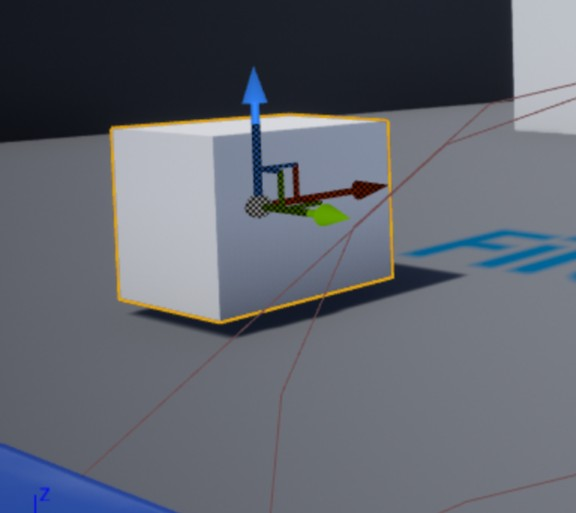

11.实时旋转 Actor
接上一节教程，在本教程中，我们将每帧都对一个 actor 进行旋转。创建一个新的 C++ Actor 类并将其命名为 RotatingActor。在头文件中，我们将创建 3 个浮点变量。我们将把它们的 UPROPERTY 设置为 EditAnywhere，这样我们就可以在编辑器中更改值，我们将把所有变量放在 Movement 类别中，以使它们在一起，并与其他属性分开。
下面是最终的头文件。
RotatingActor.h
#pragma once
#include "CoreMinimal.h"
#include "GameFramework/Actor.h"
#include "RotatingActor.generated.h"
UCLASS()
class UNREALCPP_API ARotatingActor : public AActor
{
GENERATED_BODY()
public:
// Sets default values for this actor's properties
ARotatingActor();
protected:
// Called when the game starts or when spawned
virtual void BeginPlay() override;
public:
// Called every frame
virtual void Tick(float DeltaTime) override;
// declare our float variables
UPROPERTY(EditAnywhere, Category = Movement)
float PitchValue;
UPROPERTY(EditAnywhere, Category = Movement)
float YawValue;
UPROPERTY(EditAnywhere, Category = Movement)
float RollValue;
};
在 .cpp 文件中将所有浮点变量的默认值设置为 0。
// Sets default values
ARotatingActor::ARotatingActor()
{
// Set this actor to call Tick() every frame. You can turn this off to improve performance if you don't need it.
PrimaryActorTick.bCanEverTick = true;
PitchValue = 0.f;
YawValue = 0.f;
RollValue = 0.f;
}
在 Tick 函数中创建一个名为 NewRotation 的 FRotator 变量，并将其设置为前面创建的浮点变量。接下来，创建一个 FQuat 变量（四元数），并将其设置为 NewRotatoin 。然后，我们要做的就是运行 AddActorLocalRotation，让 actor 旋转到位。
下面是最终的.cpp 代码。
void ARotatingActor::Tick(float DeltaTime)
{
Super::Tick(DeltaTime);
// on every frame change rotationg for a smooth rotating actor
FRotator NewRotation = FRotator(PitchValue, YawValue, RollValue);
FQuat QuatRotation = FQuat(NewRotation);
AddActorLocalRotation(QuatRotation, false, 0, ETeleportType::None);
// The below method causes a bug for the pitch value. The pitch value stops updating at 90 degrees
// this is a known bug in the Unreal Engine.
// solution found by ue4 user nutellis https://answers.unrealengine.com/questions/591752/pitch-rotation-stucks-at-90-90-c.html
// FRotator NewRotation = GetActorRotation();
// NewRotation.Pitch += PitchValue;
// NewRotation.Yaw += YawValue;
// NewRotation.Roll += RollValue;
// OR add values using the FRotator Add function
// FRotator NewRotation = GetActorRotation().Add(PitchValue, YawValue, RollValue);
// SetActorRotation(NewRotation);
}
效果图
为该 actor 添加 cube 组件，并设置 pitch 后，它就绕着 Y 轴旋转（UE4 是左手坐标系）

